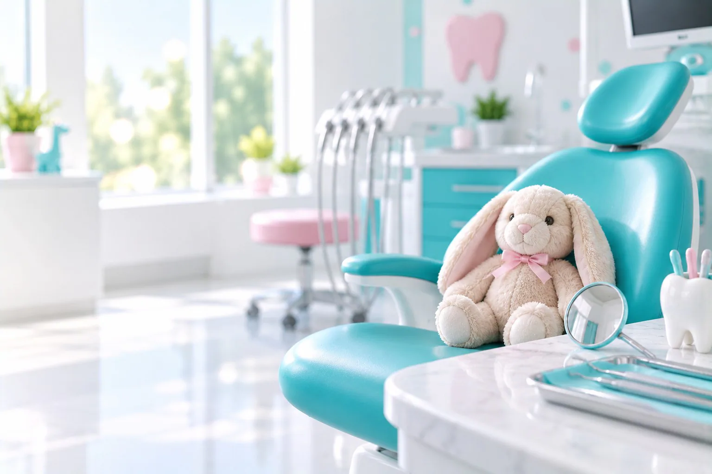
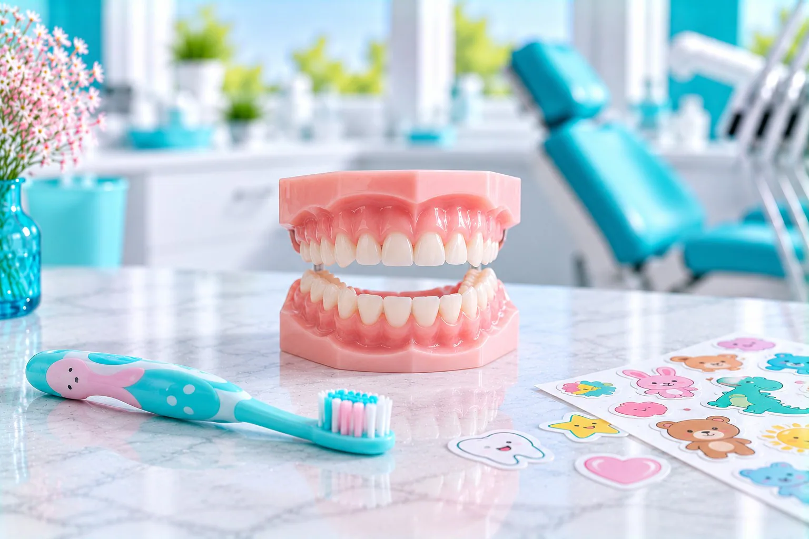

Детский кабинет
Отдельный кабинет для приёма детей.

Детская стоматология «Вайтис» в Одинцово: лечение кариеса молочных зубов от 3 800 ₽, пульпита от 5 600 ₽, удаление молочного зуба от 2 000 ₽, герметизация фиссур 3 200 ₽, детская гигиена от 3 500 ₽.
Ведёт детский стоматолог, прикус проверяет ортодонт, в клинике есть детская игровая зона. Клиника на ул. Северная, 5 к4 (ЖК «Одинбург»), приём ежедневно с 9:00 до 21:00.
Имеются противопоказания. Необходима консультация специалиста.
Лечение зубов детям: цены по прайсу клиники. Детская стоматология платная, точную сумму врач называет после осмотра.
Скидка 5% многодетным семьям и пенсионерам. Лечение можно оплатить частями, условия подскажет администратор. Выдаём документы для налогового вычета 13%.
Имеются противопоказания. Необходима консультация специалиста.
Лечение зубов детям: цены по прайсу клиники. Детская стоматология платная, точную сумму врач называет после осмотра.
| Услуга | Когда нужна | Цена |
|---|---|---|
| Лечение кариеса молочного зуба | кариес молочного зуба | от 3 800 ₽ |
| Лечение пульпита молочного зуба | воспаление нерва молочного зуба | от 5 600 ₽ |
| Удаление молочного зуба | если зуб нельзя сохранить | от 2 000 ₽ |
| Герметизация фиссур | бороздки жевательных зубов | 3 200 ₽ |
| Коронка на молочный зуб | при сильном разрушении | 5 500 ₽ |
| Детская профгигиена | чистка зубов ребёнку | от 3 500 ₽ |
| Пластика уздечки | короткая уздечка языка или губы | от 5 900 ₽ |
Скидка 5% многодетным семьям и пенсионерам. Лечение можно оплатить частями, условия подскажет администратор. Выдаём документы для налогового вычета 13%.
Имеются противопоказания. Необходима консультация специалиста.
Детский стоматолог в Одинцово ведёт приём в детском кабинете. Детский зубной врач объясняет ребёнку простыми словами, что будет делать, а стоматология для детей начинается со знакомства.
Отдельный кабинет для приёма детей.
Пока вы ждёте приёма, ребёнок может поиграть.
Помогают ребёнку отвлечься во время лечения.
Небольшой подарок за смелость.
Детский стоматолог в Одинцово ведёт приём в детском кабинете. Детский зубной врач объясняет ребёнку простыми словами, что будет делать, а стоматология для детей начинается со знакомства.
Отдельный кабинет для приёма детей.
Пока вы ждёте приёма, ребёнок может поиграть.
Помогают ребёнку отвлечься во время лечения.
Небольшой подарок за смелость.
Если зубы растут криво или неправильно смыкаются, покажите ребёнка ортодонту: детский ортодонт подберёт пластинки для детей или другой аппарат.

Лечим молочные зубы, предупреждаем кариес и удаляем зубы, которые сохранить нельзя.
Кариес и пульпит молочных зубов, коронка на молочный зуб 5 500 ₽. Подробнее: лечение молочных зубов.
Детская гигиена, а ещё врач может закрыть фиссуры герметиком за 3 200 ₽.
Если зуб нельзя вылечить, врач может удалить молочный зуб. Пластика уздечки от 5 900 ₽.
Дети у стоматолога легче привыкают, когда знают, что их ждёт. Записать ребёнка к стоматологу можно по телефону или онлайн.
Объясните простыми словами, что врач посмотрит зубки. Не пугайте уколом.
С любимой игрушкой ребёнку привычнее в кабинете.
В игровой зоне ребёнок освоится до приёма.
Врач знакомится, показывает инструменты и осматривает зубы. Можно смотреть мультики.
Ребёнок получает подарок, а вы рекомендации по уходу за его зубами.
Дети у стоматолога легче привыкают, когда знают, что их ждёт. Записать ребёнка к стоматологу можно по телефону или онлайн.
Объясните простыми словами, что врач посмотрит зубки. Не пугайте уколом.
С любимой игрушкой ребёнку привычнее в кабинете.
В игровой зоне ребёнок освоится до приёма.
Врач знакомится, показывает инструменты и осматривает зубы. Можно смотреть мультики.
Ребёнок получает подарок, а вы рекомендации по уходу за его зубами.
Позвоните, запишем на ближайшее свободное время. Если появился отёк щеки, температура или ребёнок вялый, к врачу нужно срочно, а в нерабочее время клиники звоните в скорую помощь 103. Флюс у ребёнка домашними средствами не лечат.
Тепло может усилить воспаление.
Только то, что ребёнку раньше назначал педиатр, в дозе по возрасту.
Что делать при боли: острая зубная боль.
Детей принимает Казарян Кристина Суриковна, ортодонт и детский стоматолог. Отзывы родителей можно прочитать на её странице.
Зачем лечить молочные зубы, если они выпадут?
Кариес молочного зуба может перейти в пульпит, а воспаление у корней затронуть зачаток постоянного зуба. Если молочный зуб удалить рано, соседние зубы могут сместиться, и постоянному не хватит места.
Сколько стоит лечение зуба ребёнку?
Лечение кариеса молочного зуба от 3 800 ₽, пульпита от 5 600 ₽. Точную цену врач назовёт после осмотра.
Что делать, если у ребёнка болит зуб?
Записаться на ближайшее свободное время. До визита не греть щёку; обезболивающее или жаропонижающее давать только то, что ребёнку раньше назначал педиатр, в дозе по возрасту. При отёке щеки, температуре или вялости срочно к врачу, в нерабочее время клиники звоните в скорую помощь 103.
Как подготовить ребёнка к визиту?
Рассказать о враче простыми словами, без угроз уколом. В клинике есть игровая зона, на приёме можно смотреть мультики.
Больно ли лечить зубы ребёнку?
Перед лечением кариеса, пульпита и перед удалением врач делает местное обезболивание. Давление и вибрацию ребёнок может чувствовать.
Можно ли получить справку в детский сад?
Да, в клинике можно пройти стоматологический осмотр и получить справку для детского сада.
Можно ли прийти с ребёнком в выходные?
Да, клиника работает ежедневно с 9:00 до 21:00.
Имеются противопоказания. Необходима консультация специалиста.
Каждая услуга открывается отдельной страницей с ценами, этапами лечения и ответами на вопросы. Нажмите на название, чтобы прочитать.
Запишите ребёнка на осмотр к детскому стоматологу
Записать ребёнкаАдрес и как добраться. ул. Северная, 5 к4 (ЖК «Одинбург»). МЦД-1 «Одинцово», автобусы и маршрутки до остановки «Комбинат бытового обслуживания», дальше пешком по Северной. Приём ежедневно с 9:00 до 21:00.
Имеются противопоказания. Необходима консультация специалиста.
Перезвоним, подберём врача и удобное время.
Оставьте номер, администратор перезвонит и ответит на вопросы.
Подойдёт КТ, панорама, прицельный снимок или фото плана лечения из другой клиники. Врач посмотрит и ответит в течение рабочего дня. Это бесплатно.
Хирург, ортопед и терапевт осмотрят вас вместе, сделаем КТ. Консультация бесплатная, стоимость лечения врач назовёт после осмотра.
Врачи клиники
 ТерапевтЕлена
ТерапевтЕлена Детский врачКристина
Детский врачКристина ХирургАкоб
ХирургАкобПервый визит бесплатно
Врач осмотрит, при необходимости сделает снимок и назовёт цену лечения. Оставьте номер, администратор перезвонит и подберёт время.
Консультация с осмотром под микроскопом бесплатно
Ежедневно с 9:00 до 21:00.